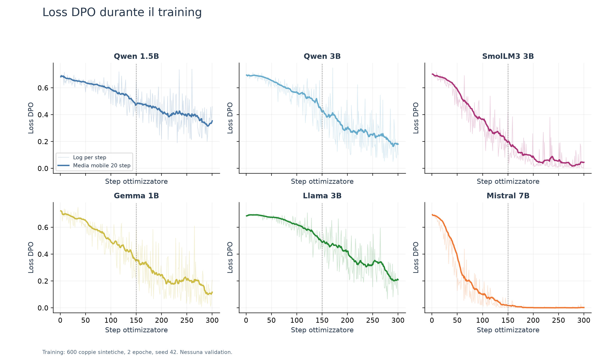
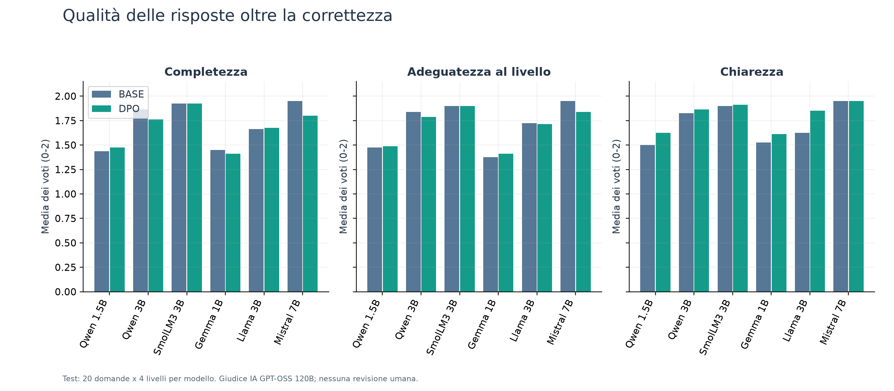
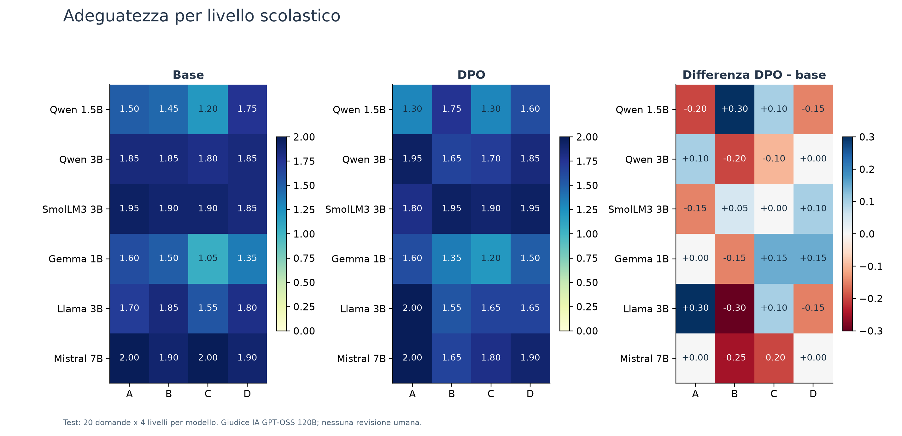
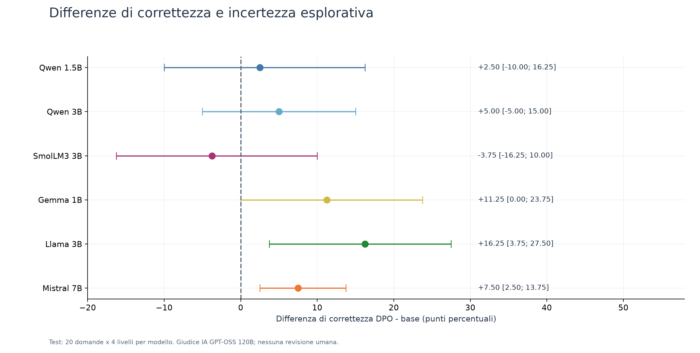
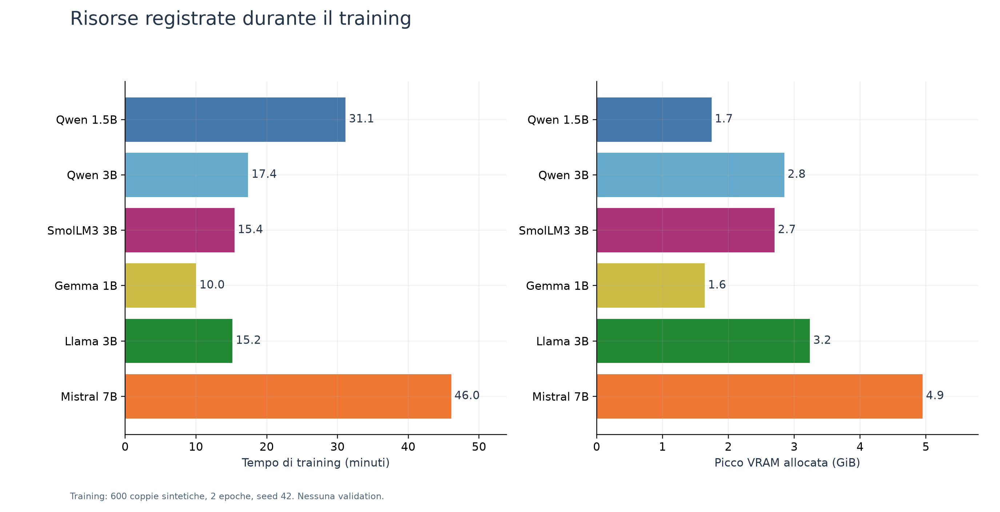

Progettazione di un tutor astronomico basato su documenti e studio dell’allineamento DPO su sei modelli linguistici
AstroTutor è un prototipo di assistente didattico che risponde a domande di astronomia utilizzando una raccolta documentale e un livello scolastico indicato dall’utente. Il problema affrontato non è soltanto produrre una risposta plausibile, ma conciliare correttezza, pertinenza e comprensibilità rispetto ai prerequisiti dello studente. Una spiegazione formalmente corretta può infatti risultare troppo tecnica per un bambino o troppo generica per uno studente universitario.
Il progetto combina Retrieval-Augmented Generation (RAG), per fornire al modello brani pertinenti, e Direct Preference Optimization (DPO), per modificarne il comportamento attraverso confronti fra risposte preferite e rifiutate. La prima implementazione comprendeva già indicizzazione, ricerca, generazione, guardrail e allineamento di Qwen 3B. La fase successiva ha approfondito soprattutto la tracciabilità e la valutazione, fino a un confronto controllato su sei modelli.
La campagna finale utilizza 600 coppie sintetiche derivate dai PDF e un test separato di 20 domande, ripetute a quattro livelli. Le 960 risposte Base/DPO sono state valutate automaticamente con una rubrica comune. Il DPO aumenta il numero di risposte corrette in cinque modelli su sei, ma non migliora uniformemente l’adeguatezza didattica e tende a ridurre la lunghezza. Il risultato principale è quindi un beneficio condizionato alla dimensione di qualità osservata, non una conferma generale dell’utilità o inutilità della tecnica.
R1. Il DPO migliora la correttezza delle risposte rispetto allo stesso modello iniziale, a parità di contesto e condizioni di generazione?
R2. Il miglioramento, quando presente, riguarda anche completezza e adattamento al livello?
R3. L’effetto si ripete su famiglie e dimensioni differenti, oppure dipende dal modello?
R4. È possibile realizzare e mostrare l’intero prototipo su hardware locale con memoria limitata?
Le pagine seguenti descrivono i concetti, la pipeline originale, le modifiche, i dati, il protocollo e i risultati. L’analisi distingue tre oggetti: il sistema RAG completo, il test controllato della generazione e la demo Streamlit. I risultati del secondo non equivalgono a una validazione complessiva del primo, né a una misura dell’apprendimento degli studenti.
La relazione è basata sul codice e sui file salvati, non su nuove esecuzioni dei training. La provenienza sintetica dei dati e l’assenza di revisione umana indipendente vengono dichiarate come limiti del lavoro.
Un modello linguistico può rispondere usando quanto appreso nel pretraining, ma questa conoscenza non coincide necessariamente con i documenti selezionati per il corso. AstroTutor introduce un contesto esterno: la domanda viene confrontata con il corpus e i brani recuperati sono inseriti nel prompt. Il RAG rende così esplicito il materiale su cui costruire la risposta e consente di mostrarlo allo studente. Il paradigma collega una componente di recupero a una di generazione [1].
Il prompt definisce invece il compito: rispondere in italiano, usare il contesto e rispettare il livello. Cambiare il prompt non modifica i pesi del modello. Questa semplicità lo rende una baseline necessaria: un eventuale training deve dimostrare un beneficio aggiuntivo rispetto a un modello già istruito in modo adeguato. Un buon risultato della baseline non rende il progetto banale; rende più esigente la domanda sperimentale.
| Tecnica | Informazione utilizzata | Ruolo in AstroTutor |
|---|---|---|
| RAG | Brani pertinenti recuperati dai documenti | Fornisce evidenza e limita il campo della risposta. |
| Prompting | Istruzioni, domanda e profilo dello studente | Specifica il comportamento desiderato in inferenza. |
| SFT | Esempi di risposte desiderate | È stato esplorato nei pilot, non nel confronto finale a sei modelli. |
| DPO | Preferenza fra chosen e rejected sullo stesso prompt | È l’intervento studiato nella campagna finale. |
Il DPO ottimizza direttamente le preferenze rispetto a un modello di riferimento, senza addestrare separatamente un reward model [2]. In una coppia il prompt è identico: cambia la risposta. Il segnale di training indica quale delle due debba essere favorita. Il vantaggio pratico per questo progetto è poter descrivere un comportamento desiderato anche attraverso esempi negativi, anziché fornire soltanto risposte da imitare.
La tecnica, però, apprende il criterio effettivamente rappresentato nei dati. Se una risposta è preferita perché corretta e l’altra è falsa, il segnale riguarda soprattutto la correttezza. Per isolare l’adattamento didattico servirebbero anche coppie entrambe corrette e pertinenti, ma diverse per prerequisiti, spiegazione dei termini e profondità. Questa distinzione è decisiva nell’interpretazione del dataset finale.
La memoria della GPU locale è limitata a circa 8 GB. Con QLoRA il modello di base è mantenuto quantizzato e congelato, mentre si aggiornano piccoli adattatori LoRA [3]. Nella campagna sono stati utilizzati NF4, doppia quantizzazione e calcolo BF16. La scelta rende praticabile il training locale; non elimina la necessità di controllare memoria, lunghezze e compatibilità dei tokenizer.
La raccolta combina PDF di astronomia e contenuti divulgativi. Il livello del materiale è importante perché una fonte per la scuola primaria e un testo universitario possono trattare lo stesso tema con prerequisiti molto diversi. I metadati conservano titolo, provenienza, argomento e difficoltà, così da poter usare queste informazioni durante il recupero e mostrare la fonte della risposta.
Il parsing dei PDF è affidato a Docling; i moduli di acquisizione gestiscono anche fonti divulgative come Vikidia ed EduINAF. Il testo estratto viene pulito e suddiviso in porzioni, dette chunk. Il file chuncking.py combina separazione per titoli Markdown e suddivisione ricorsiva: la configurazione letta prevede 1.500 caratteri, sovrapposizione di 200 e scarto dei frammenti inferiori a 150 caratteri. Sono caratteri, non token del modello.
La suddivisione cerca un equilibrio: un frammento troppo breve perde il contesto; uno troppo lungo può mescolare informazioni e occupare spazio nel prompt. La sovrapposizione riduce il rischio di spezzare completamente un concetto al confine. Queste scelte non assicurano automaticamente qualità scientifica: refusi, semplificazioni e ambiguità del documento possono rimanere nei brani.
I chunk sono trasformati in vettori con BAAI/bge-m3 e salvati in ChromaDB. La ricerca iniziale seleziona candidati semanticamente vicini alla domanda. Un secondo modello, BAAI/bge-reranker-v2-m3, valuta direttamente coppie domanda–brano e riordina i candidati. Il primo stadio restringe il campo; il secondo affina l’ordinamento prima della generazione.
La classe AdvancedRetriever accetta più varianti della domanda: nella pipeline originale possono essere usate la formulazione italiana e quella tradotta. I documenti duplicati vengono rimossi. Il filtro ammette il livello richiesto e livelli vicini; un bonus di 0,5 favorisce, a parità di pertinenza, la corrispondenza esatta. Il fallback evita che l’assenza di materiale di un livello renda impossibile rispondere, ma richiede al generatore di adattare il testo.
| Livello richiesto | Livelli documentali ammessi | Significato |
|---|---|---|
| A · primaria | A, B | Evita l’uso diretto di testi universitari. |
| B · medie | B, A, C | Consente fonti vicine ai prerequisiti. |
| C · superiori | C, B, D | Ammette approfondimenti da semplificare. |
| D · università | D, C | Privilegia fonti avanzate, con fallback. |
Durante la ricostruzione locale è stato verificato un indice di 16.874 chunk unici provenienti da 82 file JSONL, senza chunk mancanti o aggiuntivi rispetto a quelli attesi. Questo è un controllo di completezza dell’indice, distinto dalla sua capacità di recuperare sempre il brano migliore.
La classe RAGGenerator costruisce il prompt unendo domanda, contesto recuperato e istruzioni di livello. Nella versione originale la generazione avviene tramite Ollama e il modello predefinito è Qwen 2.5 3B. Il prompt impone di usare le fonti e prevede un rifiuto quando il contesto non contiene la risposta. Il livello non viene stimato dal sistema: è selezionato esplicitamente dall’utente.
ResponseGuardrails controlla aspetti come leggibilità, gergo, formule e lunghezza. Se rileva problemi può richiedere una nuova risposta. È quindi un controllo successivo alla generazione, non un meccanismo di apprendimento. Soprattutto, non è un verificatore scientifico: una risposta semplice e scorrevole può contenere un errore fisico e superare comunque questi controlli.
Questa distinzione spiega perché osservare soltanto la risposta finale può essere fuorviante. Un miglioramento potrebbe derivare dal modello, dal prompt, dai documenti recuperati o da una rigenerazione. Per attribuirlo al DPO occorre mantenere fissi gli altri componenti o almeno registrarne il comportamento.
Il progetto originale non si limitava al prompting. La classe TripletFactory costruiva esempi di preferenza usando un modello “oracolo”, configurato tramite Groq, e risposte rifiutate con problemi di registro, contenuto o pertinenza. Il lavoro storico comprende due versioni DPO di Qwen 3B, indicate nel confronto finale di luglio come 378 e 623 triplette. I modelli venivano addestrati con QLoRA/TRL, esportati in GGUF e usati tramite Ollama.
La valutazione originale considerava l’indice di leggibilità Gulpease, la fedeltà al contesto tramite RAGAS e il comportamento su domande fuori dominio. Il report del 26 luglio documenta differenze fra giudice locale e rivalutazione su Colab, oltre a un difetto nella metrica dei rifiuti. Questi elementi non consentivano una conclusione stabile sull’effetto dell’allineamento [4].
Il repository include anche una valutazione IR su 172 query e sei configurazioni in ablazione, con un riferimento BM25 e metriche Recall@k, MRR e nDCG. Recall@k misura se i documenti rilevanti compaiono fra i primi risultati; MRR valorizza la posizione del primo risultato rilevante; nDCG considera qualità e posizione dell’ordinamento. Sono metriche del recupero, non voti sulla spiegazione prodotta.
La nuova campagna non ricalcola queste misure. Riprende il problema lasciato aperto dal lavoro precedente: verificare l’effetto del DPO con un confronto più controllato e su più famiglie. Le percentuali storiche e quelle nuove non sono combinate, perché cambiano dati, giudice e protocollo. Una differenza fra le due campagne non può essere attribuita soltanto al modello.
Il branch esperimento-calibrazione mantiene l’architettura e interviene sulla misurabilità del sistema. Il confronto verificato tra main 6859ea6 e il commit 9e21b5b riguarda dieci file tracciati. Non si tratta di una riscrittura completa: alle classi esistenti sono state aggiunte funzioni di registrazione e sono stati affiancati script sperimentali.
| Intervento | Problema affrontato |
|---|---|
| Configurazione e oracolo | La chiave API viene richiesta quando necessaria, evitando che un import locale fallisca in sua assenza. |
| generate_record() | Registra domanda, prompt, documenti, parametri, risposta originale/finale, tempi e azioni dei guardrail. |
| Contesti riutilizzabili | Permette confronti con gli stessi brani, riducendo la variabilità dovuta alla ricerca. |
| Guardrail tracciati | Distingue modifica dei pesi e correzione successiva della risposta. |
| Retrieval CUDA/CPU | Seleziona il dispositivo disponibile senza cambiare la logica di ricerca. |
| run_dev.py e judge_dev.py | Supportano generazioni, giudizi riprendibili e materiale per controllo delle risposte. |
Le prove preliminari hanno esaminato penalità di generazione, comportamento del modello base e piccoli training DPO. Sono stati eseguiti anche pilot SFT, SFT+DPO e una continuazione SFT di controllo. Lo scopo era distinguere problemi dell’ambiente, della generazione e dell’obiettivo di apprendimento prima di investire in una campagna più ampia. Il dataset del pilot comprendeva 22 esempi di training e 6 di validation: troppo pochi per una conclusione generale.
Un controllo sulle penalità, svolto su otto domande ai quattro livelli, mostrava differenze medie contenute: l’adeguatezza stimata passava da 3,031 a 3,125 azzerandole, mentre la correttezza passava da 3,969 a 3,938. Questi voti appartengono alla vecchia rubrica di sviluppo e non sono confrontabili direttamente con la scala 0–2 del test finale. Servivano a diagnosticare, non a proclamare un vincitore.
I prompt dei pilot sono stati osservati ripetutamente e non sono usati come test conclusivo. Analogamente, l’esistenza di pilot SFT non significa che il confronto finale includa SFT su sei modelli: i due bracci finali sono modello iniziale e modello con DPO diretto. Il termine “base” indica qui il checkpoint Instruct iniziale, non un modello mai sottoposto ad instruction tuning.
La campagna estesa è salvata in outputs/dpo_pdf_600, esternamente al repository originale; parte degli script locali dei pilot non è tracciata in Git. Per una consegna riproducibile occorre accompagnare il branch con questi artefatti, evitando di presentarli come già inclusi automaticamente nella cronologia Git.
I primi tentativi di produzione automatica con generatori e giudici avevano una resa bassa: contesti inadatti, evidenze non trovate, risposte artificiali o coppie senza una preferenza chiara. I limiti API aumentavano il costo operativo. Il dataset finale è stato quindi costruito offline con assistenza IA a partire da concetti contenuti nei PDF. Non coincide con i candidati scartati né con un semplice ampliamento delle 623 triplette originali.
Sono stati selezionati 25 nuclei tematici da sei documenti di training, con tre domande per nucleo: 75 domande distinte. Ogni domanda è proposta ai livelli A–D, ottenendo 300 prompt. Per ogni prompt sono presenti una risposta preferita e due risposte rifiutate, che producono 600 coppie DPO, 150 per livello. Le 600 righe non rappresentano quindi 600 contenuti indipendenti.
| Elemento | Contenuto e funzione |
|---|---|
| Prompt | Profilo, brano di riferimento e domanda; stesso input per chosen e rejected. |
| Chosen | Risposta pertinente, basata sul brano e formulata per il livello indicato. |
| Rejected fattuale | Contiene un errore intenzionale; 300 coppie. |
| Rejected fuori tema | Risposta tratta da un altro nucleo, allo stesso livello; 300 coppie. |
Domanda, livello A: «Perché non c’è un’eclissi di Luna a ogni Luna piena?»
Preferita: «Il percorso della Luna è inclinato: spesso la Luna piena passa sopra o sotto l’ombra della Terra.»
Rifiutata, errore intenzionale: «A ogni Luna piena si verifica necessariamente un’eclissi, perché l’orbita lunare non è inclinata rispetto a quella terrestre.»
La coppia mostra bene ciò che il modello può apprendere: favorire una spiegazione coerente con l’inclinazione dell’orbita rispetto a un’affermazione falsa. Non mostra, invece, una preferenza puramente didattica fra due spiegazioni corrette. Inoltre, negativi con errori evidenti o formule assolute possono rendere il compito relativamente facile e permettere scorciatoie stilistiche.
Il pacchetto conserva chunk sorgente, percorsi, identificativi e offset dei brani, insieme ad hash e controlli di conteggio, unicità e separazione delle fonti. Gli offset si riferiscono ai chunk: non vengono inventati numeri di pagina. Alcuni contesti di training sono in inglese, mentre le risposte sono in italiano. I dati sono neutrali rispetto al tokenizer, così da applicare a ogni modello il proprio chat template.
Verificare che un brano sia presente nel corpus non significa validarne scientificamente ogni affermazione. La scrittura assistita e i controlli strutturali non sostituiscono una revisione indipendente. È disponibile anche un file SFT con le 300 risposte preferite deduplicate, ma non è stato usato come braccio della campagna finale.
Sono stati addestrati Qwen 2.5 1.5B e 3B, SmolLM3 3B, Gemma 3 1B, Llama 3.2 3B e Mistral 7B v0.3. Includere più modelli permette di osservare se l’effetto persiste oltre il primo Qwen, ma non rende il confronto una misura isolata dell’architettura: cambiano dimensione, dati di pretraining e instruction tuning.
| Impostazione comune | Valore |
|---|---|
| Dati e durata | 600 coppie; 2 epoche; 300 step di ottimizzazione |
| DPO | Loss sigmoid; beta 0,1; modello iniziale come riferimento |
| Ottimizzazione | Learning rate costante 5 × 10-6; seed 42 |
| Batch | 1 esempio per dispositivo; accumulo di 4 step |
| LoRA | Rank 8; alpha 16; dropout 0,0; proiezioni q/k/v/o |
| Memoria | NF4 con doppia quantizzazione; BF16; gradient checkpointing |

Figura 1. Loss registrata durante i sei training. Linee tenui: valori per step; linee piene: media mobile retrospettiva su 20 step. Il confine fra epoche è indicato verticalmente.
La loss diminuisce in tutti i run, indicando che l’obiettivo sulle coppie di training viene ottimizzato. Una loss molto bassa non dimostra però una spiegazione migliore su domande nuove. Può riflettere anche negativi facilmente distinguibili e ripetizione dei medesimi prompt. Non sono disponibili curve di validation per questa campagna: non si conclude quindi, dalla sola discesa, che il modello generalizzi o che non stia memorizzando.
Tokenizzazione e lunghezze sono state controllate per ciascuna famiglia. Gemma e Mistral richiedono l’unione dell’istruzione di sistema al primo messaggio utente; SmolLM3 usa la configurazione senza thinking. Le revisioni e le impostazioni effettive sono registrate nei manifest. Usare gli stessi iperparametri controlla una parte del confronto, ma non equivale a ottimizzarli per ogni modello.
Il test comune è stato congelato prima della generazione finale. Comprende 20 domande, due per ciascuno di dieci nuclei, a quattro livelli: 80 prompt per modello. Le quattro fonti documentali non appartengono al training o allo sviluppo. Gli argomenti possono sovrapporsi a quelli già trattati: si valuta il trasferimento a nuove domande e nuovi brani, non necessariamente a un dominio astronomico mai incontrato.
I contesti del test sono riformulazioni italiane dell’assistente, con conservazione degli estratti originali. La scelta uniforma la lingua e riduce refusi e passaggi estranei, ma introduce una mediazione sintetica che deve essere dichiarata. I punti di riferimento per il giudizio non vengono forniti al generatore. Il campione è piccolo e contiene anche quesiti di definizione o correzione di equivoci.
Per ciascun prompt vengono prodotte due risposte sullo stesso modello quantizzato: una con adapter disattivato e una con adapter attivo. Restano uguali contesto, domanda, profilo e decoding greedy, con massimo 384 nuovi token e repetition penalty 1. Retrieval variabile e guardrail sono esclusi. Questo disegno riduce i fattori che potrebbero essere scambiati per un effetto del DPO, ma misura la generazione con contesto, non la pipeline RAG end-to-end.
| Dimensione | Criterio della rubrica |
|---|---|
| Correttezza C/P/I | C: nucleo corretto senza errori sostanziali; P: parziale o ambiguo; I: nucleo errato o errore grave. |
| Completezza 0–2 | Copertura degli elementi essenziali della domanda, senza pretendere ogni informazione del contesto. |
| Adeguatezza 0–2 | Compatibilità di prerequisiti, termini spiegati e profondità con il livello. |
| Chiarezza 0–2 | Comprensibilità, coerenza e assenza di contraddizioni. |
Le 960 risposte sono state valutate con GPT-OSS 120B su Groq, senza nomi del modello o della condizione. Otto duplicati identici associati allo stesso prompt riutilizzano il giudizio: le valutazioni uniche sono 952. Il salvataggio progressivo permette di riprendere dopo limiti API senza rigenerare le risposte già prodotte. Una prima prova locale con Qwen 7B è stata esclusa dopo giudizi problematici.
Il giudice fornisce voti e motivazioni, ma resta un modello e può sbagliare. I controlli elementari effettuati non ne certificano l’affidabilità sull’intero campione. Le preferenze complessive sono derivate dai voti, dando priorità a correttezza, poi completezza, adeguatezza e chiarezza: non costituiscono una seconda valutazione indipendente. È predisposto un campione cieco di 24 coppie, non ancora revisionato da una persona.

Figura 2. Risposte classificate C dal giudice automatico, su 80 per modello e condizione. La percentuale rappresenta il campione osservato, non una probabilità generale di correttezza.
| Modello | C base → DPO | Delta p.p. | I base → DPO |
|---|---|---|---|
| Qwen 2.5 1.5B | 40 → 42 | +2.50 | 18 → 20 |
| Qwen 2.5 3B | 63 → 67 | +5.00 | 8 → 0 |
| SmolLM3 3B | 69 → 66 | -3.75 | 3 → 3 |
| Gemma 3 1B | 38 → 47 | +11.25 | 20 → 14 |
| Llama 3.2 3B | 50 → 63 | +16.25 | 12 → 6 |
| Mistral 7B v0.3 | 73 → 79 | +7.50 | 2 → 0 |
Il conteggio delle risposte corrette aumenta in cinque modelli su sei. Llama 3.2 3B mostra il maggiore incremento assoluto: 13 risposte C in più, pari a 16,25 punti percentuali. Gemma guadagna nove risposte, mentre Mistral, già elevato nella condizione iniziale, passa da 73 a 79. SmolLM3 è l’eccezione: perde tre risposte C e passa da 86,25% a 82,50%.
Per Qwen 3B il beneficio è particolarmente visibile nella categoria I, che scende da otto a zero; non tutte le risposte diventano però pienamente corrette, perché aumentano anche le parziali. In Qwen 1.5B aumentano sia C sia I, a scapito di P. Guardare soltanto la prima colonna avrebbe nascosto questa regressione. Il dato va quindi letto come distribuzione della qualità, non come una sola classifica.
Aggregando descrittivamente i sei modelli, C passa da 333 a 364 su 480 risposte per condizione. Il totale non equivale a 480 domande indipendenti: gli stessi quesiti e brani vengono riutilizzati. Inoltre, un modello con punteggio iniziale alto dispone di un margine di crescita minore. Il confronto più informativo resta quello appaiato entro ciascun modello.

Figura 3. Medie descrittive dei voti ordinali 0–2. Le dimensioni vengono mantenute separate perché una risposta corretta può essere incompleta o inadatta al profilo.
I guadagni fattuali non si trasferiscono automaticamente all’obiettivo educativo. L’adeguatezza media rimane invariata in SmolLM3, cresce di poco in Qwen 1.5B e Gemma, e diminuisce in Qwen 3B, Llama e Mistral. Il risultato non sostiene quindi un miglioramento uniforme dell’adattamento ai prerequisiti dello studente. Le medie su una scala di tre valori sono sintesi descrittive, non misure continue della qualità pedagogica.

Figura 4. Adeguatezza distinta per livello e variazione dopo DPO. Ogni cella contiene soltanto 20 risposte; la mappa serve a localizzare differenze che la media generale nasconde.
Per esempio, in Llama il livello A passa da 1,70 a 2,00, mentre B scende da 1,85 a 1,55 e D da 1,80 a 1,65. In Qwen 3B A migliora da 1,85 a 1,95, ma B passa da 1,85 a 1,65. Non esiste dunque un unico effetto “sul livello”: lo stesso training può favorire alcune condizioni e penalizzarne altre.
Il caso Mistral evidenzia il compromesso: C aumenta fino a 79/80, ma completezza e adeguatezza medie scendono rispettivamente da 1,95 a 1,80 e da 1,95 a circa 1,84. Secondo la regola di preferenza derivata, il DPO vince solo sette confronti contro 21 del base, con 52 parità. Correttezza aggregata e preferenza complessiva non sono quindi indicatori intercambiabili.

Figura 5. Distribuzione della lunghezza in parole. La riduzione compare in tutte le famiglie. Il numero di parole è una descrizione del comportamento, non un voto didattico.
Le parole medie scendono, per esempio, da 103 a 48 in Qwen 3B, da 146,3 a 63,3 in Llama e da 86,4 a 43,6 in Mistral. Una spiegazione più breve può evitare aggiunte errate, ma può anche perdere passaggi necessari. Il dataset è compatibile con questa interpretazione, senza dimostrarne la causa: non è stata eseguita un’ablazione che separi preferenza per correttezza e preferenza implicita per brevità.
Nel prompt test03_D, sul gas vicino ai buchi neri, Qwen 3B base aggiunge che la trasformazione avviene «solo quando il gas si avvicina troppo al buco nero, oltre l’orizzonte degli eventi». Il giudice assegna I. Dopo DPO la risposta diventa: «L’energia potenziale gravitazionale può essere convertita in calore e radiazione durante l’accrescimento del gas che si avvicina al buco nero.» Il giudizio passa a C, mentre la completezza scende da 2 a 1 e l’adeguatezza rimane 1.
Questo caso documenta la rimozione di un’affermazione problematica, non il raggiungimento di una spiegazione universitaria completa. È un esempio scelto per illustrare il compromesso, non una stima rappresentativa di tutti i casi.
In test01_A, Mistral base spiega che l’infrarosso attraversa le nubi con attenuazione minore rispetto al visibile. La risposta DPO conserva il riferimento all’emissione infrarossa della polvere, ma omette quel passaggio. Entrambe sono classificate C dal giudice, mentre la completezza passa da 2 a 1. La motivazione salvata permette di capire la perdita che la sola correttezza binaria non mostrerebbe.
Queste valutazioni sono riportate come giudizi automatici conservati, non come validazione esperta delle singole frasi. Anche la coerenza fra motivazione e punteggio merita revisione umana. Sono state mantenute nel test tutte le risposte, comprese quelle al limite: i casi segnalati passano complessivamente da 37 nel base a 3 nel DPO. Escluderli a posteriori avrebbe modificato il confronto.

Figura 6. Differenza DPO meno Base nella quota di risposte C, con intervalli bootstrap esplorativi al 95%. Il ricampionamento raggruppa le osservazioni per dieci brani.
Le quattro versioni di una domanda condividono il contenuto e due domande possono condividere il brano. Trattare tutte le righe come indipendenti renderebbe l’incertezza troppo ottimistica. Il bootstrap usato raggruppa per contesto, ma dispone soltanto di dieci gruppi e non rappresenta tutte le dipendenze fra brani dello stesso PDF. Non incorpora inoltre errore del giudice, variabilità fra seed o scelta degli iperparametri.
Gli intervalli comprendono lo zero per Qwen 1.5B, Qwen 3B e SmolLM3; quello di Gemma lo tocca. Per Llama e Mistral restano positivi nel ricampionamento adottato. Non è stata applicata una correzione per confronti multipli: questi risultati non vengono trasformati in una dichiarazione generale di significatività. Un effetto osservato su un piccolo test rimane dipendente dal protocollo.

Figura 7. Durata del training e picco di memoria allocata registrato. Sono dati operativi dei run, non un benchmark controllato di velocità fra architetture.
Tutti i training sono stati completati sulla RTX 4070 Laptop da 8 GB. Le durate registrate vanno da circa 10 minuti per Gemma a 46 per Mistral; i picchi allocati sono compresi tra circa 1,64 e 4,95 GiB. Sono esclusi dal significato di “tempo di training” download, preparazione, esperimenti falliti e valutazione. La memoria allocata da PyTorch non coincide necessariamente con l’intera occupazione mostrata dal sistema.
PyTorch/CUDA, Transformers, Datasets, Accelerate, TRL, PEFT e bitsandbytes costituiscono lo stack della campagna. L’uso di adapter rende il lavoro fattibile su hardware personale; il costo più rilevante del percorso complessivo comprende anche costruzione dei dati, controlli e giudizi API, non soltanto gli step di ottimizzazione.
L’interfaccia Streamlit consente di selezionare livello A–D, modello e modalità Base, DPO o confronto affiancato. La risposta è accompagnata dai brani recuperati, consultabili in un pannello espandibile. È possibile esportare domande, risposte e fonti in JSON. La cronologia serve alla consultazione: ogni domanda viene elaborata separatamente e non viene simulata una memoria conversazionale non implementata.
| Elemento | Funzione effettiva |
|---|---|
| app.py | Gestisce impostazioni, input, risposte, fonti e visualizzazione dei risultati finali. |
| TutorService in backend.py | Riusa AdvancedRetriever.search e RAGGenerator.build_prompt; carica modello e adapter locali con Transformers/PEFT. |
| Confronto affiancato | Recupera i documenti una sola volta e genera con adapter spento/acceso sullo stesso modello. |
| Gestione delle risorse | Mantiene un solo modello; serializza l’accesso alla GPU; usa CPU per embedding e re-ranker. |
| run_app.ps1 | Avvia Streamlit su localhost; non avvia training e non richiede chiavi Groq. |
La demo legge i pesi già scaricati, gli adapter finali e l’indice esistente. Sono stati verificati avvio, controlli dell’interfaccia e un confronto reale Qwen 3B con due fonti. Questa verifica conferma il collegamento dei componenti, non la qualità educativa su tutte le domande o il funzionamento end-to-end di ogni famiglia in ogni condizione di memoria.
Il test usa contesti congelati; la demo esegue una ricerca live con query italiana e il prompt RAG originale, senza traduzione e guardrail. Una risposta diversa nella demo non invalida né replica automaticamente il risultato del test. Il pulsante dei risultati mostra le misure già salvate e non le aggiorna usando conversazioni occasionali. Questa separazione evita che una dimostrazione favorevole venga presentata come un nuovo esperimento.
dataset_consegna/build.py ricostruisce i dati; i manifest ne registrano gli hash. train_dpo_600.py e le varianti per famiglia addestrano gli adapter. Gli script compare_test_*600.py generano i due bracci. evaluate_final_local.py, nonostante il nome, gestisce anche il giudice Groq. make_relation_charts.py produce le figure dai log e dai giudizi conservati.
Repository, cartella sperimentale e demo sono artefatti complementari. I pesi e il database non sono inclusi nello ZIP leggero della relazione. Una nuova installazione richiede i percorsi e le dipendenze documentati nel README. L’interfaccia è una dimostrazione locale, non un servizio scolastico multiutente pronto alla distribuzione.
AstroTutor ha raggiunto due risultati distinti: una pipeline utilizzabile per rispondere su documenti astronomici e un confronto tracciabile dell’effetto del DPO su sei modelli. Il secondo mostra miglioramenti della correttezza stimata in cinque casi, insieme a una riduzione generalizzata della lunghezza. Completezza e adeguatezza non seguono lo stesso andamento. La risposta alla domanda iniziale è quindi articolata: il DPO può essere utile con questi dati e queste impostazioni, ma non realizza automaticamente un tutor didatticamente migliore.
La distinzione è coerente con il segnale di training. Le coppie contrappongono soprattutto risposte corrette a errori o contenuti estranei; non isolano la preferenza per un registro adeguato. Il mancato guadagno didattico non dimostra l’inefficacia generale del metodo. Allo stesso tempo, la discesa della loss e alcuni miglioramenti fattuali non autorizzano a dichiarare raggiunto l’obiettivo educativo originario.
I limiti principali sono dati sintetici non revisionati indipendentemente, test di 20 domande, un solo seed, un solo giudice automatico e assenza di un confronto SFT sistematico. La separazione per documento riduce alcune contaminazioni, ma non esclude somiglianze concettuali. Il test controllato esclude gli errori di retrieval; la demo li reintroduce. Nessuno studio ha misurato apprendimento, autonomia o comprensione degli studenti.
Un’estensione mirata dovrebbe introdurre coppie entrambe corrette e pertinenti ma diverse per qualità della spiegazione, raccogliere una revisione cieca indipendente e confrontare Base, SFT, DPO e SFT+DPO sugli stessi dati. Per attribuire l’effetto del DPO dopo SFT, il confronto necessario è SFT contro SFT+DPO. Repliche con più seed e un test più ampio renderebbero più solide le stime; uno studio con studenti risponderebbe a una domanda diversa, quella dell’efficacia educativa.
[1] Lewis et al. (2020), Retrieval-Augmented Generation for Knowledge-Intensive NLP Tasks. arxiv.org/abs/2005.11401
[2] Rafailov et al. (2023), Direct Preference Optimization: Your Language Model is Secretly a Reward Model. arxiv.org/abs/2305.18290
[3] Dettmers et al. (2023), QLoRA: Efficient Finetuning of Quantized LLMs. arxiv.org/abs/2305.14314
[4] Repository AstroTutor e report del 26/07/2026: github.com/francesco-de-marco/astroTutor. Confronto locale main 6859ea6 / esperimento-calibrazione 9e21b5b.
[5] Artefatti interni: dataset_consegna/manifest.json; PROTOCOLLO_TEST_COMUNE.md; test_common_v1_manifest.json; runs/*/run_manifest.json e training_history.json; evaluation/final_groq_v1/summary.json e scored_responses.json; streamlit_app/QA.json.
Trasparenza: costruzione del dataset finale e redazione assistite da IA. Le figure e i valori derivano dai file della campagna; non sono risultati inventati o nuove misure prodotte per la relazione. Le annotazioni automatiche sono mantenute distinte dalla revisione umana.